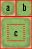
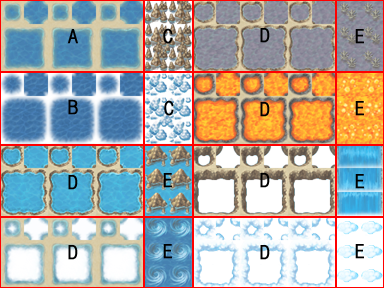
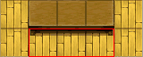

素材规格
对于图片和音频等所有素材，VX Ace 允许您直接使用原本的素材文件。
选择主菜单的「工具」→「素材管理」，可以打开一个供导出和导入各种素材的对话框。直接将素材复制进游戏文件夹可也以，但是素材管理窗口有一些特殊的功能（比如透明色设定），在对软件不熟悉的时候可以使用。
PNG 或 JPG 格式的图片文件均可以使用。 PNG格式完全支持真彩色32位（以及Alpha通道）。
- 角色行走图 (Graphics/Characters)
-
这类文件包含在地图上显示的角色图像。
角色大小任意，一个角色元包含四个方向的行走图（上、下、左、右）和三帧的步行样式，总共12帧，按规定的顺序排列。一个行走图文件包含纵向两个角色元，横向四个角色元，总共八个角色元。该角色单帧图片的尺寸大小为此文件的 1/12 宽度和 1/8 高度。
为了让角色与建筑物的重叠看起来更有真实感，角色显示时比地图元件高 4 像素。
- 在文件名前面加上半角符号「!」可以取消角色比地图元件高 4 像素的效果以及经过流体属性图块时的半透明效果。大多用于物件类的角色，如门和宝箱。这个符号也可以与下文的「$」符号并用。
- 在文件名前面加上半角符号「$」，那么该文件就只能容纳一个角色元。换句话说，单帧角色图片的尺寸大小为此文件的 1/3 宽度和 1/4 高度。这个符号也能与上文的「!」并用。
- 脸图 (Graphics/Faces)
-
这类文件包含了菜单和对话框中所使用的角色头像。
每张头像的尺寸大小为 96×96 像素，一个文件包含了纵向两个头像，横向四个头像，总共八个头像。
- 敌人战斗图 (Graphics/Battlers)
-
这类文件包含了敌人在战斗画面中显示的图像。
图片尺寸大小不限，但是注意不要超过尺寸为 544×296 的战斗画面。
- 动画素材 (Graphics/Animations)
-
这类文件包含了（主要在战斗画面所用的）动画效果素材。
每个区块包含五张尺寸大小为 192×192 、横向排列的画片，在一个图像文件内可以任意纵向延伸区块，但是最多20个区块（100张画片）。由于加载耗时的关系，不推荐使用太大的图片文件。
- 地图元件图块 (Graphics/Tilesets)
-
这类文件包含了地图绘制所用的地图元件信息。
请参考图块素材详细
- 战斗背景 (Graphics/Battlebacks1, Graphics/Battlebacks2)
-
这类文件包含了战斗界面中显示的战斗背景图片。
Battlebacks1主要是地面的图片，Battlebacks2主要是墙壁的图片，这两种图片可以任意地组合成战斗的背景。
图片的尺寸为580×444，略大于屏幕尺寸。
- 远景图 (Graphics/Parallaxes)
-
这类文件包含了在地图空白处显示的远景图像。
尺寸大小没有限制，如果想要循环显示的话，就制作成如网页背景图一样上下左右相连的样式。
- 标题画面素材 (Graphics/Titles1, Graphics/Titles2)
-
这类文件包含了在标题画面显示的图片。
Titles1主要用来绘制背景，Titles2主要用来绘制边框，这两种图片可以任意地组合成标题画面。
图片的尺寸为544×416。
- 心情图标 (Graphics/System/Balloon.png)
-
该文件包含了在使用事件指令「显示浮动图标」时所显示的图标。
文件尺寸为 256×320 。文件包含每行 8 帧 × 十行的心情图标，每帧的尺寸为 32× 32。
- 图标素材 (Graphics/System/IconSet.png)
-
该文件包含了技能和物品名称旁边所显示的图标。
一张图标组素材每行包含 16 个图标（每个图标尺寸为 24×24 ），高度不限。
另外，64~95号图标会在角色发生能力强化/弱化时显示。
- 战斗开始时的渐变特效图 (Graphics/System/BattleStart.png)
-
该文件包含战斗开始时渐变的效果图。
尺寸大小为 544×416，文件必需为 256色彩的灰阶 PNG 格式。游戏将按照由低至高的灰度重新绘制画面。
- 飞艇阴影 (Graphics/System/Shadow.png)
-
该文件包含玩家角色乘坐飞艇时所显现的阴影图文件。
尺寸大小随意。
- 游戏结束画面 (Graphics/System/Gameover.png)
-
该文件包含游戏结束时显示的图像。
尺寸大小为544×416。
- 窗口皮肤素材 (Graphics/System/Window.png)
-
该文件包含构成窗口的图像。
请参考窗口皮肤素材详细。
- 图片素材 (Graphics/Pictures)
-
这类文件是在游戏中事件指令所调用显现的图片文件。
尺寸大小随意。
地图元件尺寸为 32×32，分成五组，从A ～ E，遵守下面的规则。
此外，根据数据库中 [图块] → [模式] 的设定，图块的行为可能会发生变化。有关 [兼容VX的类型] 中图块的行为，请参考 「RPG Maker VX」的素材规格。
- A 组元件
-
在显示地图时作为底层显示，分成五个部分，大部分部分为「自动元件」――会自动形成边界的特殊地图元件。
自动元件原则上会分成下图所看到的六个部分图块。

- a
- 样式标识图，显示在地图元件选择面板中。
- b
- 四个角都有内角边缘的样式。
- c
- 主样式，整合了八个边角样式和一个中央样式。
自动元件的图像上，如果右下角（4, 4）的位置是透明的话，该自动元件会被判定为森林类元件。森林类元件拥有流体属性时，在图中包含右下角和左下角边界线的八种图块上，行走图不会有半透明处理。
- 样式 1
-

尺寸大小限制为 512×384，如上图分成五个部分。一般来说，这类的自动元件彼此相邻时并不会自动形成边界。
只有此类的地图元件允许大/小型船通行，不过如果通行度被设置为允许步行时，大/小型船将会无法通行。
- 区块 A
-
这是作为海洋的地图元件，三组基本自动元件横向排列在一起会形成动画。
- 区块 B
-
这是作为海洋的地图元件，三组基本自动元件横向排列在一起会形成动画。
做为深海的地图元件。只有这一块的元件，在与样式 1 的元件相邻时，会形成海的边界线。区块 A 元件会自动填满透明部分。与区块 A 一样，三组基本自动元件横向排列在一起会形成动画。
小舟不允许通过此区块。
- 区块 C
-
用来装饰区块 A 的自动元件，区块 A 元件会自动填满透明部分。
小舟、大船皆不可以从本区块元件上通行。
- 区块 D
-
作为河流的地图元件。三组基本自动元件横向排列在一起会形成动画。
- 区块 E
-
作为瀑布的地图元件。两块横向排列的元件形成一组，三组原件纵向排列在一起会形成动画。
小舟、大船皆不可以从本区块元件上通行。
- 样式 2
-
尺寸大小为 512×384。如上图所示，分成四排组二区块元件。这是唯一会因为数据库的图块模式设置不同而使用不同规格的样式。

当被设置成柜台属性时，可以作为桌子的自动图块使用。绘制时，底部的8像素会有向下的偏移。
- 区块 A（世界地图类型）
-

这个区块由四个部分的自动图块组成，在实际的使用过程中将被处理成四种情况：只有第一部分，第二部分覆盖在第一部分上、只有第三部分、第四部分覆盖在第三部分上。
- 区块 B（世界地图类型）
-
这个区块由四个部分组成，在实际的使用过程中将按照特殊规格的原则覆盖在区块A的图块上。
- 区块 A（区域地图类型）
-
这个区块由四个部分的自动图块组成，在实际的使用过程中，左边三个图块的边界并不会互相冲突。最右方的图片和其他图块之间不会产生边界线。
- 区块 B（区域地图类型）
-
这个区块由四个部分组成，在实际的使用过程中将覆盖在区块 A 的图块上。
- 样式 3
-
主要作为建筑物外观的自动元件，尺寸为 512×256，完全以自动元件的主样式组成，横向八组、纵向四组元件。
当两块以上的此类元件纵向绘制在一起时，就会在右方的图块上自动产生阴影。注意，能够自动被画上阴影的元件只能是样式 2（不包括其中的区块 B）（注：原文为区块 C）和样式 5 中的元件。
- 样式 4
-
主要用作生成墙壁的自动元件，同时也用来生成迷宫的墙壁元件。规格固定为 512×480，以自动元件的主样式或者完整样式组成并按组排列（横向八组、纵向三组）。
当两块以上的此类元件纵向绘制在一起时，就会在右方的图块上自动产生阴影。注意，能够自动被画上阴影的元件只能是样式 2（不包括其中的区块 B）（注：原文为区块 C）和样式 5 中的元件。
- 样式 5
-
文件尺寸为 256×512，容纳 8×16 块地图元件。本文件里面的元件全部视为普通元件。第三、五、七行可以在自动生成迷宫的时候用来作为地板元件。
- B～E 组元件
-
这些元件组中的元件在绘制地图时作为高层元件使用。
それぞれサイズは 512×512 で、この中にタイルを 16×16 ���Kべてください。
- B 组元件最左上角的一格代表高层没有元件的状态，因此请务必设为空白。

窗口皮肤是一张尺寸为 128×128 的图像，通常为真彩色 32 位的 PNG 文件。
- A
-
窗口背景一，64×64 的正方形，依照窗口大小缩放填满其中。严格来说，窗口的边缘比缩小了两像素，这是为了让圆角的窗口边缘能够看起来更自然。
- B
-
窗口背景二，64×64 的正方形像瓷砖一样双向并排平铺在窗口背景一之上。
- C
-
窗口边框和滚动箭头。边框的四角以 16×16 定制样式显示，其余的边框按 16 像素的样式延伸显示。箭头是窗口内容可以卷动的标志。
- D
-
指令光标，表现当前所选择的项目。最外圈的两像素纵横延伸，其他的按照光标尺寸缩放。
- E
-
在对话框中提示需要玩家按键方可继续的暂停标记。四帧动画，每帧 16×16像素。
- F
-
在事件指令「显示文本」中，设定颜色控制符所使用的文字颜色。横向八个、纵向四个颜色色块，每个颜色色块为 8×8 像素。
RPG Maker 目前支持五种音乐文件格式：OGG、WMA、MP3、 WAV和MID（仅限于BGM和ME）的音频素材。原则上我们建议所有音频素材都使用 OGG 格式。
- BGM (Audio/BGM)
-
背景音乐 (BackGround Music) 。
- BGS (Audio/BGS)
-
背景声音 (BackGround Sound) 。
- ME (Audio/ME)
-
音乐音效 (Music Effect) 。
- SE (Audio/SE)
-
声音音效 (Sound Effect) 。
各种文件格式的特征如下
| OGG | 包含 Ogg Vorbis 的压缩数据文件，以压缩率和音质著称。播放时间长达三秒或以上的便会自动串流。当注释中包含 LOOPSTART 和 LOOPLENGTH 的值时，音乐就会自动在指定的位置循环播放。 |
| WMA | 压缩的 Windows Media Player 声音文件，由 DirectShow 播放。 |
| MP3 | 非常流行的音乐压缩格式，由 DirectShow 播放。特性与 WMA 相同。 |
| WAV | Windows 波形声音文件，RMVA支持未压缩的 WAV 格式文件和 Microsoft ADPCM 编码的文件。 |
| MID | MIDI 文件由 DirectMusic Synthesizer 播放。若用作 BGM 且 MIDI 文件包含控制切换值“111”，则会将该值作为音乐播放完后重播处的标记。 |
影像素材储存在 Movies 目录下，仅支持 OGV (Ogg Theora) 格式的文件。
影像将以游戏画面为中心播放，超出屏幕大小（544x416）的影像不会自动缩放。